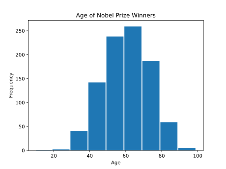
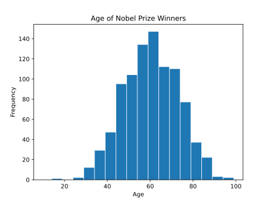

A histogram visually presents quantitative data.
A histogram is a widely used graph to show the distribution of quantitative (numerical) data.
It shows the frequency of values in the data, usually in intervals of values. Frequency is the amount of times that value appeared in the data.
Each interval is represented with a bar, placed next to the other intervals on a number line.
The height of the bar represents the frequency of values in that interval.
Here is a histogram of the age of all 934 Nobel Prize winners up to the year 2020:
This histogram uses age intervals from 10 to 19, 20 to 29, and so on.
Note: Histograms are similar to bar graphs, which are used for qualitative data.
The intervals of values are often called 'bins'. And the length of an interval is called 'bin width'.
We can choose any width. It is best with a bin width that shows enough detail without being confusing.
Here is a histogram of the same Nobel Prize winner data, but with bin widths of 5 instead of 10:
This histogram uses age intervals from from 15 to 19, 20 to 24, 25 to 29, and so on.
Smaller intervals gives a more detailed look at the distribution of the age values in the data.